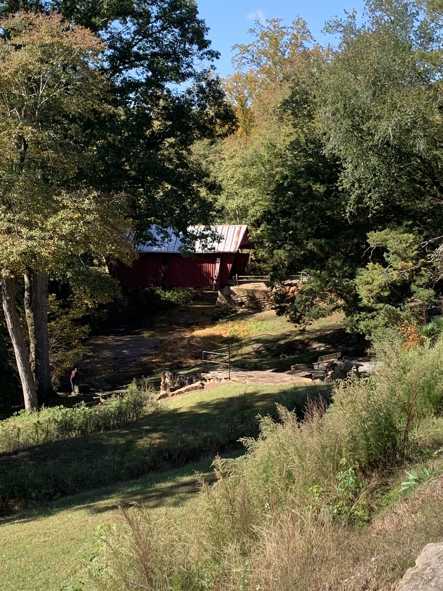
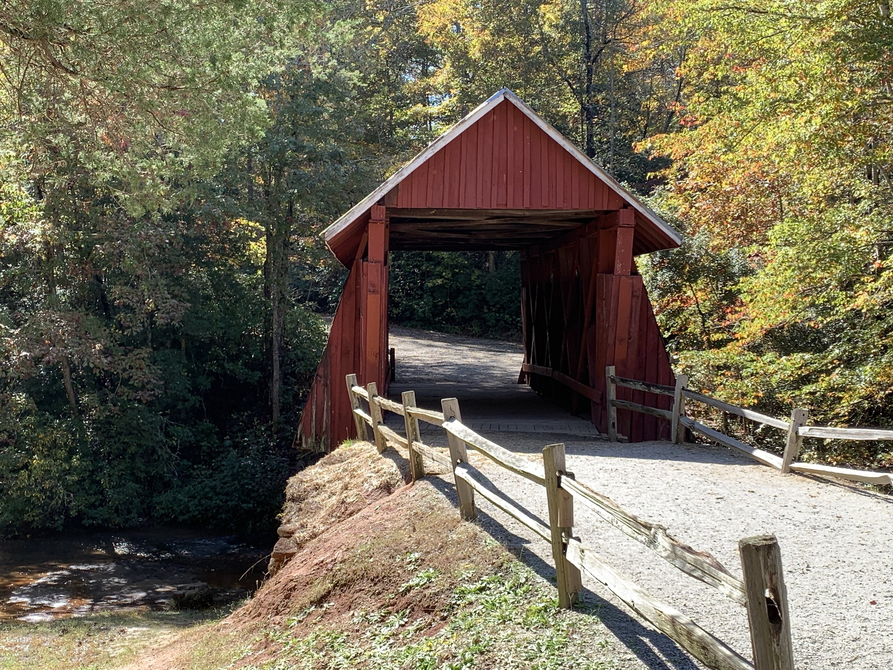
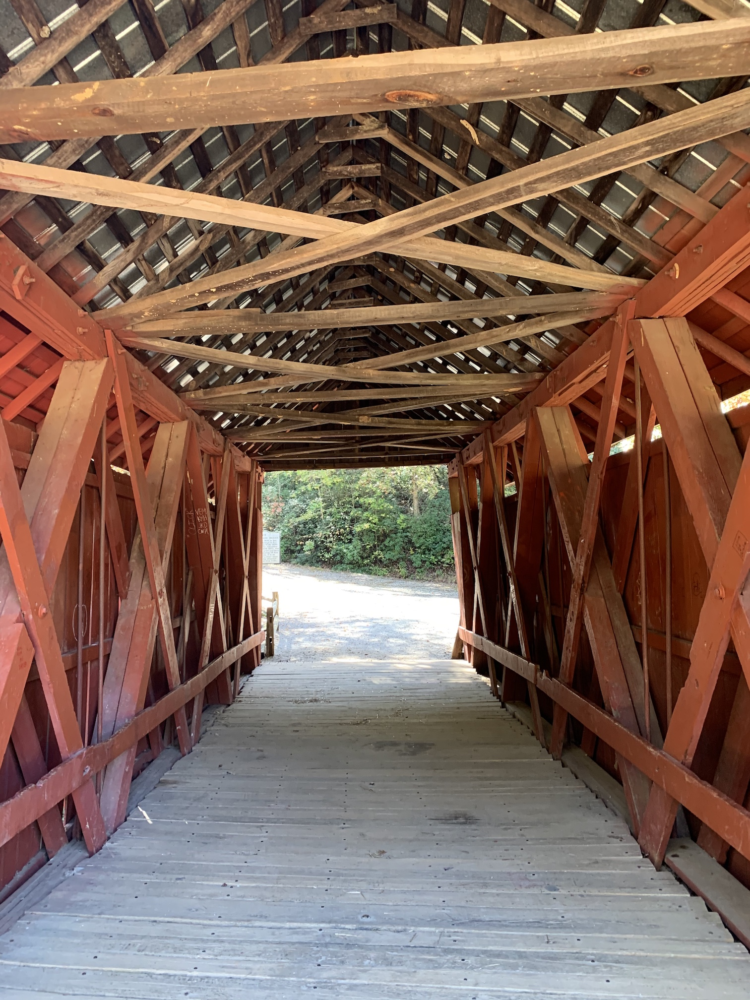
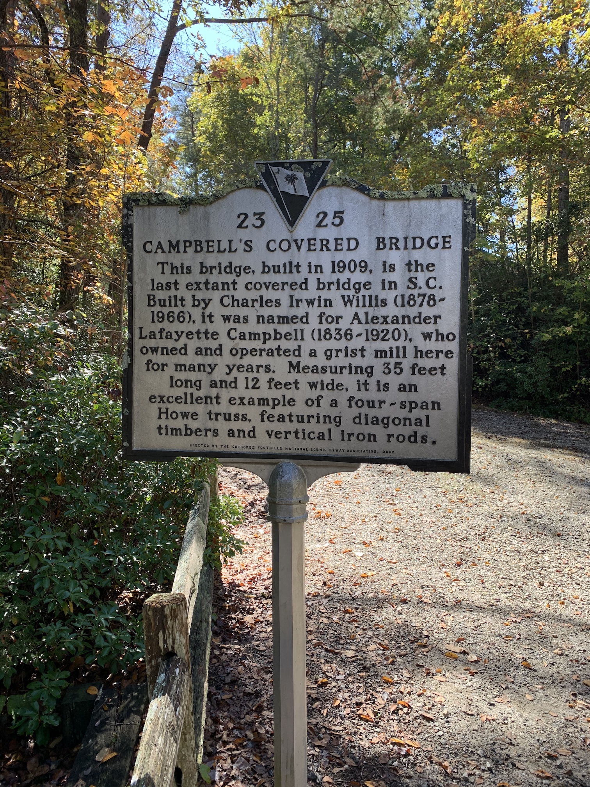
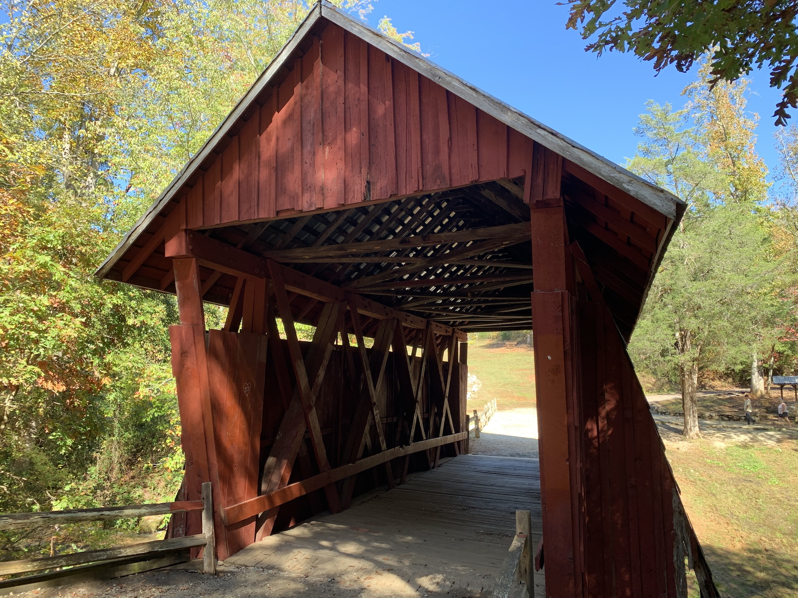
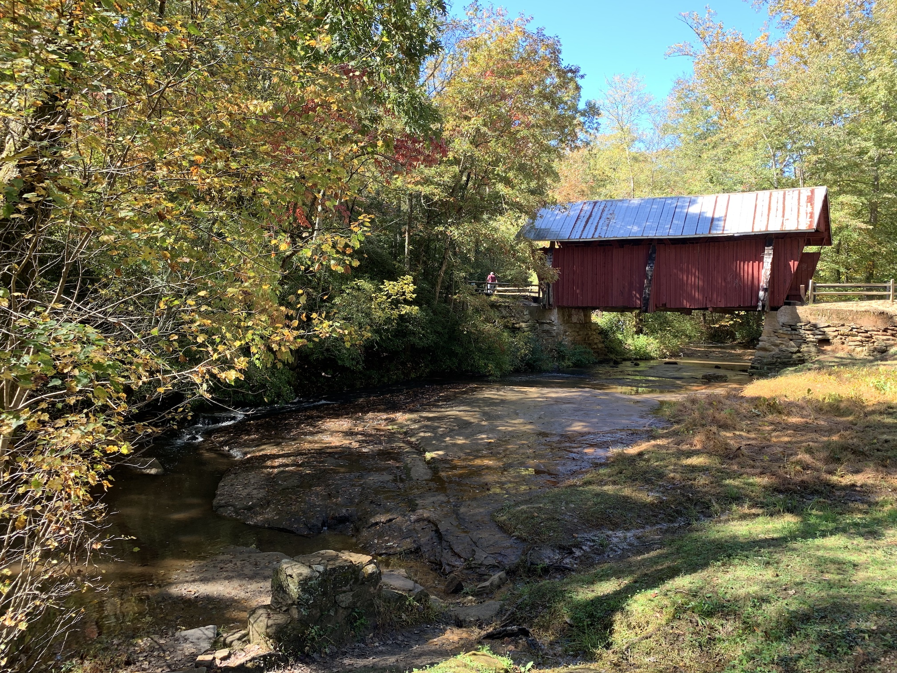
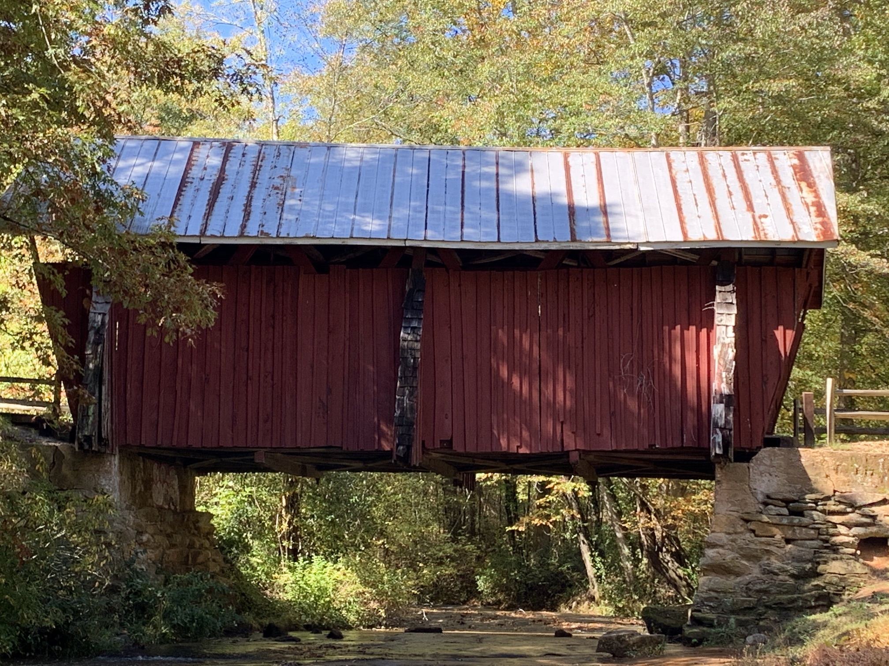

South Carolina's Last Remaining Covered Bridge
2019-10-28 · Lester Martin
Quick blog post about Campbell's Covered Bridge.







Check out more of the Covered Bridges I have been fortunate enough to see.